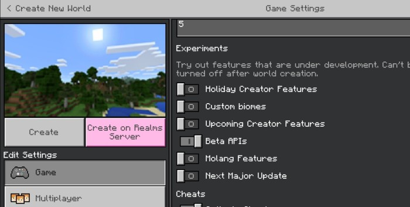

Star Bot
This addon allows you to summon Bot Players in your Minecraft bedrock world. You can use these Bots to afk at your farms or load an area while you do other work.
Features:
• Throw trident
• Apply looting
• Change Name
• Change Gamemode
• Teleport to you
• Auto - respawn behind you after dying
How to use?
To use these Bot Players, first import the provided ".mcaddon" file into minecraft, it will import a behavior pack and a resource pack into minecraft.
Now, You need to enable "Beta APIs" experiment in your world and apply the behavior pack in your world (resource pack will be applied automatically) as shown in following pictures:

Now, you need to add the "StarBot User" tag to any player who needs to be able to use Bot Players. This bit ensures that even if a player can't use commands, they can always ask the admin for this tag.
The command to add the tag to yourself:
After doing this step, you can now use the full functionality of Bot Players.
To summon a Bot Player, use the following command:
The above command will summon a Bot Player and give you a "StarBot Menu" item that can be used to control the Bot Player. But before you can control the bot player with this item, you need to rename it to match the Bot's name as shown below:
The renaming makes sure that you can control every Bot separately in case you need more than one.
Now, if you right click with this item, a menu will open from where you can control the Bot Player as shown below:
Notes:
• When you click at the "Throw Trident" option, it will ask for the co-ordinates of target block. It is important to know that the Bot will only look at the target block before throwing trident and there is no guarantee that it will hit the target.
• Experiments cannot be turned off once they are activated.
• If you close the world without removing the Bot first then it will be automatically removed without being killed and any items in its inventory will be lost.
• The Bot will automatically be removed after 1000 hours.
• All bots consider the latest "bot summoner" their "summoner" and hence treat them as the main master player but all player having "StarBot User" tag can still control them.
Copyright message:
All of the content of this addon is my original work and if you want to redistribute or use any part of this addon, however little it may be, please ask for my permission first.
Supported Minecraft Versions:
* 1.19.50
* 1.19.80
* 1.20